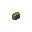
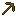
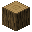
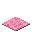
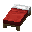

Every run starts like a brand-new world
Empty inventory, full health, dawn and clear skies. Farout times you, shows a split every 1,000 blocks and keeps a personal best for each direction.
Airtime
Type /farout start. You're lifted 50 blocks above spawn with the world on pause. You get 30 seconds to pick the direction that looks fastest. Zoom mods welcome.
Cross the line
You drop into the start area: a lane for each direction, each with a purple portal line. The clock starts the moment you cross one. Hillside in the way? Farout cuts you a staircase.
Run 10k
Straight line, as fast as you can. Reach 10,000 blocks and it's FAROUT! Your time, and a new personal best if you beat the old one.
Stay in the lane
Your lane is 7 blocks wide, lined up with where you started. Particles mark its edges ahead of you.
Step outside and every block you travel costs leeway. You get 200 per run. Black fog closes in the further you stray, and a low note sounds for every block you burn. Use it all up and lightning strikes. Run over.
So when the lane goes through a mountain, you go through the mountain. Ocean ahead? Better bring a boat.
Craft your way through
Four power-ups you can craft along the way. Each lasts 30 seconds from the first time you use it, then it's gone. Their recipes float in the corners of the start area, and they're in your recipe book too.
Mountain Hop Boots
Jump Boost X and no fall damage.
Starts when you put them onCrafting
6 coal around any boots, a feather below. Out come your boots, powered up.
Power Drill
A pickaxe with max Haste that mines 3x3.
Starts on the first block you mineCrafting


6 buttons around any pickaxe, a torch below. Out comes your pickaxe, powered up.
Can't Hurt Me
A shield that makes you immune to everything except falling.
Starts when you raise itCrafting


6 logs around a shield, any carpet below. Out comes your shield, powered up.
Morning Coffee
Speed III. Brewed from a bed, only in the minute after you sleep through a night. Right-click to drink.
Starts when you drink itCrafting

6 buttons around any bed, a torch below. Only works in the minute after you sleep through a night.
Boats
Press I while steering a boat to turn it to the nearest of north, east, south or west. Works on water, ice and land. Rebind it under Options › Controls › Key Binds › Farout.
How a run ends
- FAROUT!You reach 10,000 blocks. You get your time, and a new personal best if you beat the old one.
- FailedYou die, or you run out of leeway.
- CancelledYou leave the Overworld. No Nether shortcuts.
- Given up
/farout stopclears your inventory and takes you back to the start area.
Questions, answered
So you just... run?
Yes, you just run 10,000 blocks in one direction. Meanwhile the world is trying to kill you in every way Minecraft is capable of, especially at night, and you just have to keep moving forward.
Is hunger, sleep or fall damage disabled?
No, this is as vanilla as it gets. It's you against Minecraft's elements.
What happens when I die?
Then the run is over and you lose. Type /farout start to start again.
Is what I built on my last run still there?
No. Every run gets a fresh copy of your world, generated from its seed when the run starts and deleted when the run ends. No bridges or pillars left over from last time, no looted chests. Same seed, same direction, same course.
When a run ends, Farout asks if you want to save the seed. Saved seeds are listed in the settings screen, with every direction you've run them in, and you can copy one to paste into Create New World.
What are the commands I can use?
/farout startlifts you above the start area for Airtime, then drops you in to pick a lane./farout start north(oreast,south,west) skips the start area and starts the run straight from spawn./farout stopgives up the run, clears your inventory and takes you back to the start area./farout settingsshows the current settings, and/farout settings <name> <value>changes one. Changes apply from your next run./farout menuopens the settings screen, with your saved seeds.
Will the mod work with commands disabled?
Yes. /farout works even in a world without cheats, so you don't need to turn on Allow Commands.
What settings does this mod have?
Four, changed in the settings screen (Mod Menu's Configure button, or /farout menu), with /farout settings <name> <value>, or by editing config/farout/settings.properties. They apply from your next run.
pathWidth: how wide the lane is, in blocks. Default 7.leewayBlocks: how many blocks you may walk outside the lane per run. Default 200.airtimeHeight: how high above the start area you hang during Airtime. Default 50, and 0 skips Airtime.airtimeSeconds: how long Airtime lasts. Default 30.
The boat-straightening key (I, see Boats above) can be rebound under Options › Controls › Key Binds › Farout.
Can I cheat?
Yes. You will literally be cheating on yourself, but if that makes you feel good then please: cheat.
Is there a leaderboard?
Not right now. Before Farout can become a speedrunning thing, there's a ton I'd need to create, harden and improve first. That takes time, feedback and motivation, and I have none of that right now. — Jasper
Can I play Farout with a friend over LAN?
No. Farout is made for singleplayer. Airtime pauses the whole world for everyone, and personal bests are saved on the host's computer per direction, not per player. Multiplayer might come later.
What's the lane?
The lane is a strip 7 blocks wide, lined up with where you started, running all the way to 10,000 blocks. Particles mark its edges ahead of you. You have to stay inside it, so when the lane goes through a mountain, you go through the mountain.
Why can't I see outside the lane?
Because you're supposed to stay inside it! You get 200 blocks of leeway per run: every block you travel outside the lane uses one up. While you're out, black fog closes in the further you stray, and a low note sounds for every block you burn. Use all 200 and you're struck by lightning. Run over.
Can I contribute?
Yes! The GitHub repo is open to contributions, forks, pull requests, you name it. You can also drop a comment on the CurseForge page.
What changed in the latest version?
Every release is listed in the changelog, newest on top.
Is Farout also on Modrinth or anywhere else?
Currently Farout is only available on CurseForge.
Is Farout free?
Yes. It's a free mod and it will forever be free.
Is there any tracking, telemetry, statistics harvesting or AI scanning?
No, absolutely not. Farout is a singleplayer mod without a backend. All its data stays in your own Minecraft instance.
My question still isn't answered.
Drop a comment on the CurseForge project page or open an issue on GitHub.
Pick a direction.
North, east, south and west are four separate races. How fast is yours?
Get it on CurseForge